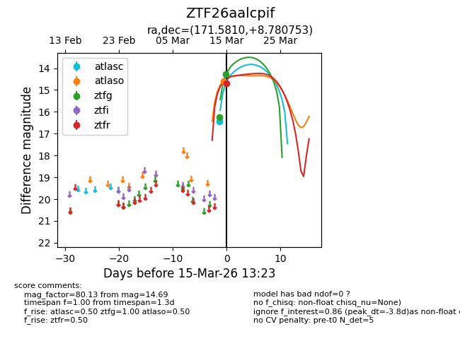
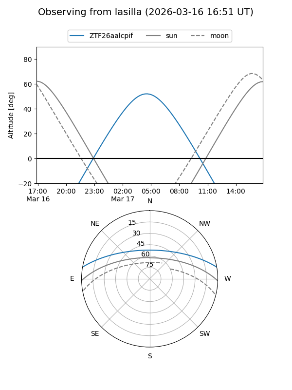
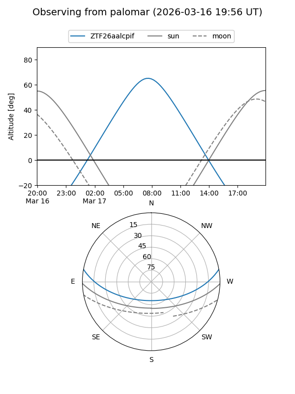
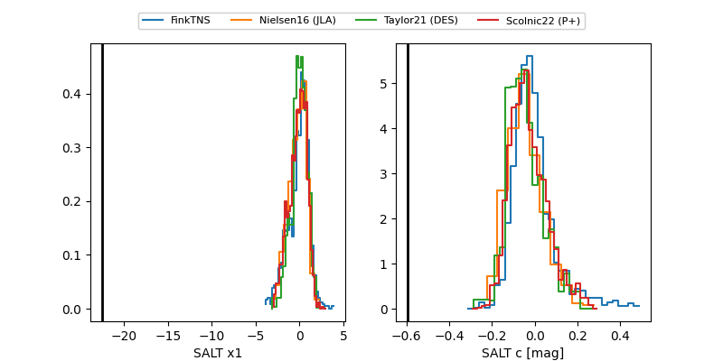

ZTF26aalcpif
Target ZTF26aalcpif at 2026-03-15 13:25
Aliases and brokers:
FINK: link
Lasair: link
ALeRCE: link
alt names
ZTF26aalcpif (ztf,fink_ztf)
Coordinates:
equatorial (ra, dec) = 171.5810,+8.78075
equatorial (HMS+DMS) = 11:26:19.44,+08:46:50.71
galactic (l, b) = (251.3121,+62.77331)
Flags:
Photometry:
last atlasc=16.45, atlaso=14.58, ztfg=14.28, ztfr=14.69
1 atlasc, 1 atlaso, 2 ztfg, 1 ztfr detections
Lightcurve

Visibility


Additional plots
